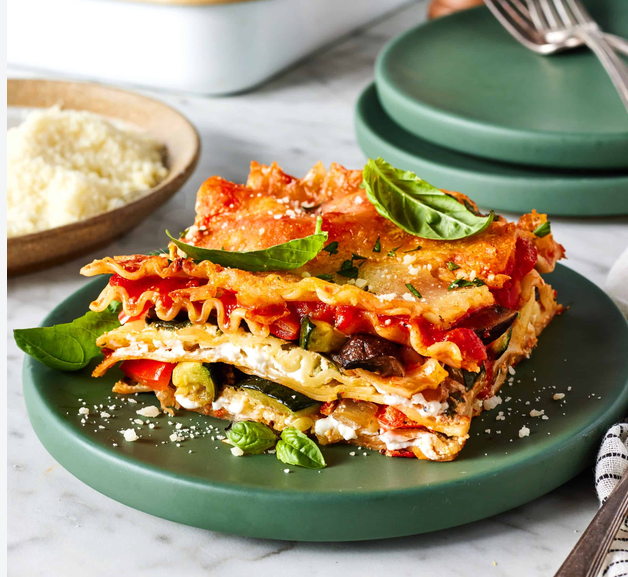

Odin Recipes
Home
Lasagna
Vegetarian lasagna is a delicious, hearty Italian-inspired dish made with layers of tender lasagna sheets,
rich tomato sauce, flavorful sautéed vegetables, creamy ricotta or cottage cheese,
and plenty of melted mozzarella and Parmesan.
Baked until golden, bubbling, and cheesy, it has a satisfying combination of soft, creamy, and savory textures.

Ingredients
- 9–12 lasagna sheets
- 2 tbsp olive oil
- 1 onion, finely chopped
- 3–4 garlic cloves, minced
- 1 bell pepper, diced
- 1 zucchini, diced
- 2 cups spinach, chopped
- 2 cups tomato pasta sauce
- 1 tsp Italian seasoning
- ½ tsp chili flakes (optional)
- 1½ cups ricotta or cottage cheese
- 1½ cups shredded mozzarella
- ½ cup grated Parmesan
- Salt and black pepper
Steps
-
Cook the vegetables: Heat olive oil in a pan. Sauté onion and garlic for 2 minutes. Add bell pepper and zucchini and cook for 5–6 minutes. Add spinach and cook until wilted.
-
Season: Add tomato sauce, Italian seasoning, chili flakes, salt, and pepper. Simmer for 8–10 minutes.
-
Prepare the cheese: Mix ricotta/cottage cheese with a pinch of salt and pepper.
-
Layer: In a baking dish, spread a little sauce, then add lasagna sheets, vegetable sauce, ricotta mixture, and mozzarella. Repeat for 2–3 layers.
-
Finish: Top with remaining sauce, mozzarella, and Parmesan.
-
Bake: Cover with foil and bake at 190°C (375°F) for 30 minutes. Remove the foil and bake another 10–15 minutes, until bubbling and golden.
-
Rest: Let it sit for 10–15 minutes before slicing.